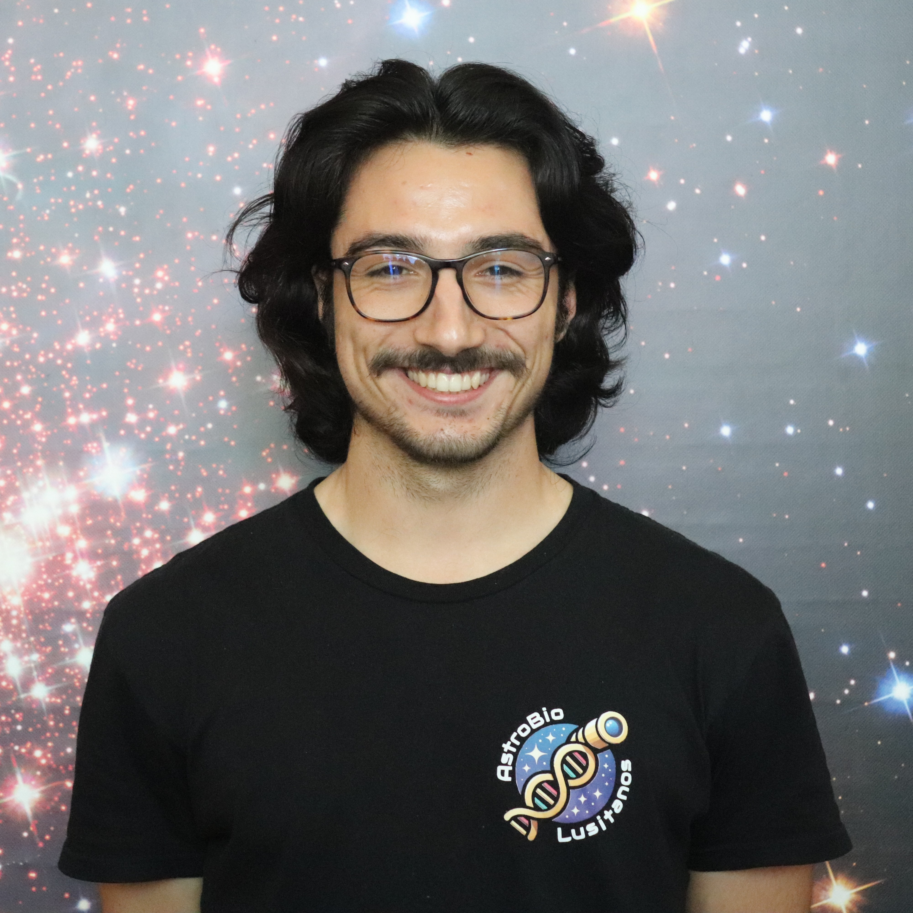
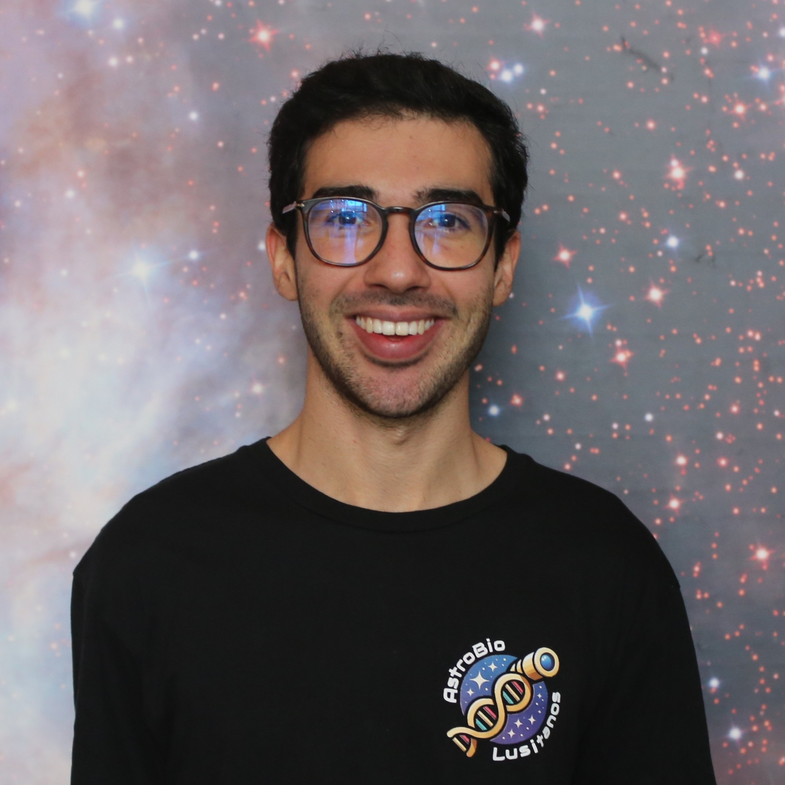
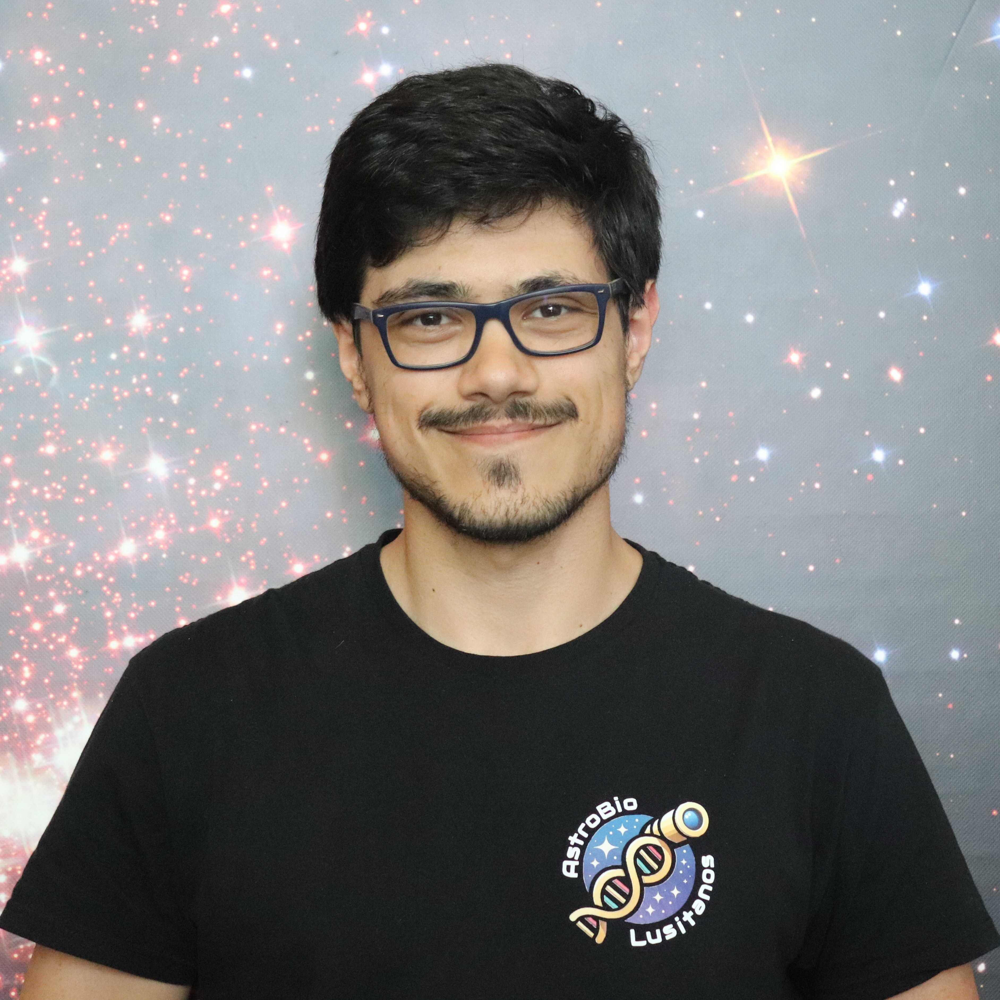
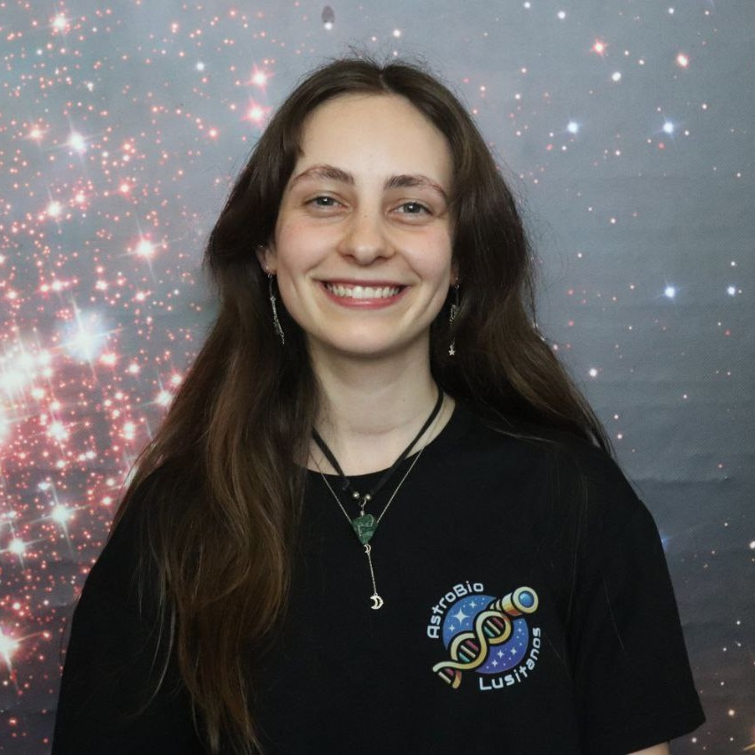
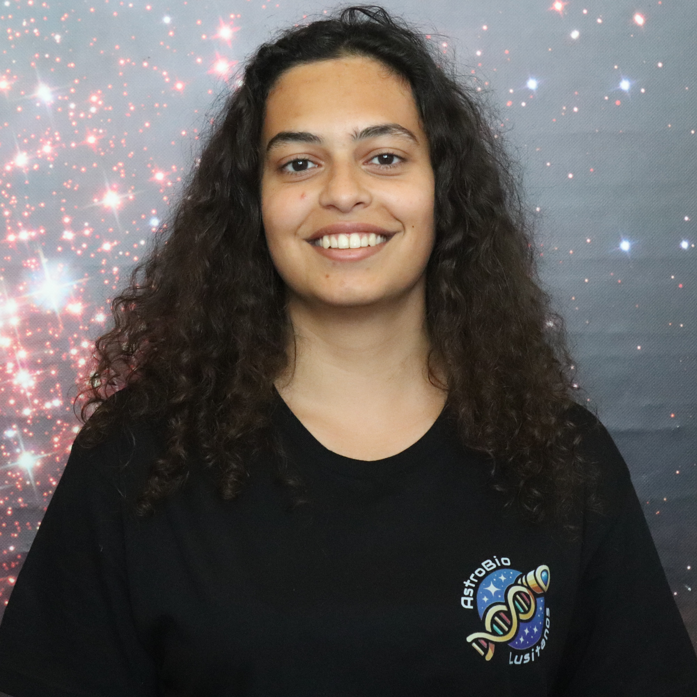
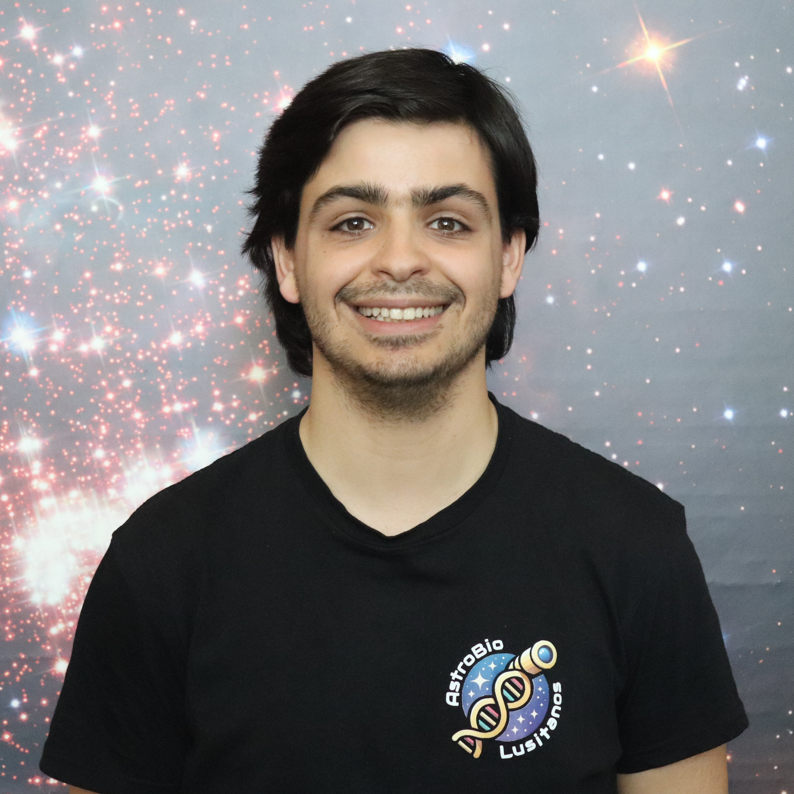

Equipa

Afonso Mota
Doutoramento em AstronomiaUniversidade do Porto

Alexandre Branco
Doutoramento em AstronomiaUniversidade do Porto

Carlos Barros
Mestrado em MicrobiologiaUniversidade de Aveiro

David Rodrigues
Doutoramento em Ciências BiológicasUniversidade de Edimburgo

Inês Figueiredo
Doutoramento em FísicaUniversidade de Edimburgo

Isabel S. Sousa
Doutoramento em Engenharia Química e BiológicaUniversidade do Porto

Marina Grilo
Doutoramento em BiologiaUniversidade do Porto

Mariana Sousa
Mestrado em Astronomia e AstrofísicaUniversidade do Porto

Rodrigo Grilo
Mestrado em MicrobiologiaUniversidade de Coimbra